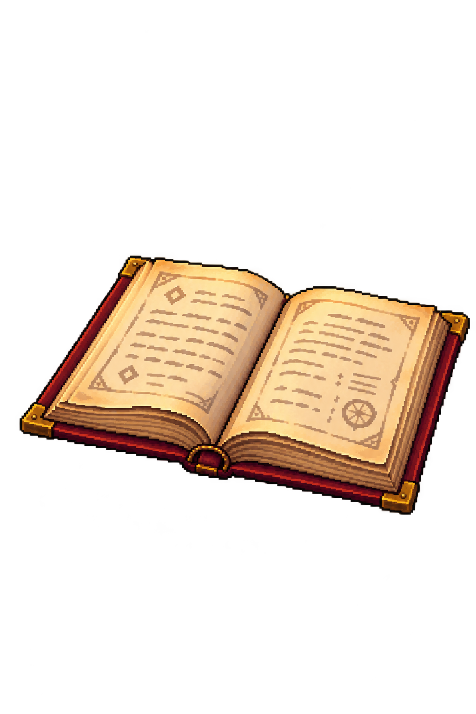
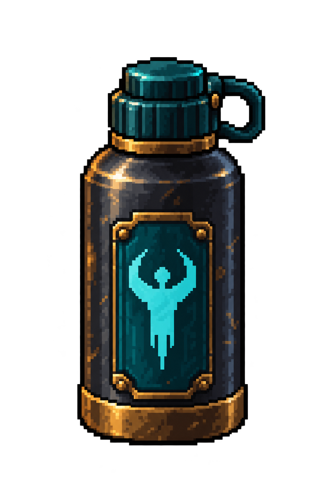
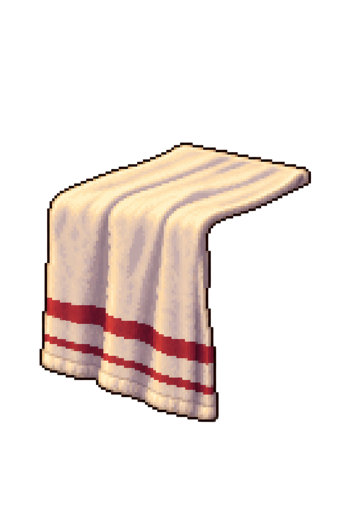

Asset handoff/review page, not app UI. One PNG per object; copy its short description with that image.
The room shell guides viewpoint; the approved Home concept guides design. The book and towel also reference their existing desk/bench. Earlier furniture perspective is still unresolved. All positions and sizes await manual alignment.
Four built-in imagegen calls; exact AutoSprite saves/exports; zero AutoSprite credits used.
Full prompts · Source hashes and asset IDs · Actual Unity room capture
Use case: stylized-concept. Produce ONE complete isolated static sprite for a pixel-art fantasy fitness room. Reference image 1 is the actual empty room: use its near-frontal elevated viewpoint and upright verticals. Reference image 2 is the furnished Home concept: match its warm materials, crisp 16-bit-inspired pixel clusters, clean dark pixel edges, amber highlights and restrained oxblood/teal accents. This is a world prop, not a rotated inventory icon. Portrait 1024x1536 canvas, generous transparent margin. Genuinely transparent RGBA background including all open holes and gaps. No painted room, floor, UI, labels, border, contact sheet, duplicate objects, broad glow or cast background shadow. Complete coherent silhouette and physically joined parts. Subject: ONE small aged-gold trophy cup like the one on the rear upper shelf in reference 2, around (689,170). Elegant broad bowl, two simple curved handles connected to the bowl, narrow stem, squat solid dark wooden plinth. The handles' interior holes must be truly transparent. Near frontal rear-wall shelf view, bowl rim a shallow ellipse, little view into the cup. Symmetrical level base. Warm worn brass/gold rather than bright magical metal. No engraving, lettering, numbers, medals, ribbons, plants, books or shelf. Static decoration, not a reward or interactive button.
Asset ID: cmuois4n60005oznknbjp7wxa. Static artwork; placement pending.

Use case: stylized-concept. Produce ONE complete isolated static sprite for a pixel-art fantasy fitness room. Reference image 1 is the actual empty room: use its near-frontal elevated viewpoint and upright verticals. Reference image 2 is the furnished Home concept: match its warm materials, crisp 16-bit-inspired pixel clusters, clean dark pixel edges, amber highlights and restrained oxblood/teal accents. This is a world prop, not a rotated inventory icon. Portrait 1024x1536 canvas, generous transparent margin. Genuinely transparent RGBA background including all open holes and gaps. No painted room, floor, UI, labels, border, contact sheet, duplicate objects, broad glow or cast background shadow. Complete coherent silhouette and physically joined parts. Subject: ONE open leather-bound book resting on the right desk, showing two cream parchment pages and the central spine/crease. Reference image 3 shows the current desk asset ONLY to guide the support plane; do not include the desk in your output. The book lies open mostly flat, page edges and cover seen slightly from above at this room's desk height, front page edge descends gently left-to-right like the desk's front edge, right depth recedes up-right. No steep top-down view and no upright standing pages. Dark oxblood leather cover, tiny aged-brass corner guards, slight page curvature, simple faint illegible ink marks, no legible writing, fitness instructions or labels. One book, not a stack. No lectern, stand, candle, quill, desk, tablecloth or other object.
Asset ID: cmuoisj700007oznkso9z3pi6. Static artwork; placement pending.

Use case: stylized-concept. Produce ONE complete isolated static sprite for a pixel-art fantasy fitness room. Reference image 1 is the actual empty room: use its near-frontal elevated viewpoint and upright verticals. Reference image 2 is the furnished Home concept: match its warm materials, crisp 16-bit-inspired pixel clusters, clean dark pixel edges, amber highlights and restrained oxblood/teal accents. This is a world prop, not a rotated inventory icon. Portrait 1024x1536 canvas, generous transparent margin. Genuinely transparent RGBA background including all open holes and gaps. No painted room, floor, UI, labels, border, contact sheet, duplicate objects, broad glow or cast background shadow. Complete coherent silhouette and physically joined parts. Subject: ONE reusable training water bottle from the bench in reference 2 around (498,609). Short stout cylindrical dark iron body, teal front inset with a simple geometric rune mark, aged-brass rim/bottom band, closed attached dark teal cap with one modest connected carry loop. Upright near-frontal view at low bench height; only shallow top ellipse and a narrow visible side. Bottle looks useful for a fantasy gym, not a potion or glowing magical vial. No visible liquid, glass transparency, cork, label, lettering, neon bloom, sparks, towel, bench or other object. Keep the bottom flat and the whole closed cap visible.
Asset ID: cmuoisx9o000ob7zdecl5wh74. Static artwork; placement pending.

Use case: stylized-concept. Produce ONE complete isolated static sprite for a pixel-art fantasy fitness room. Reference image 1 is the actual empty room: use its near-frontal elevated viewpoint and upright verticals. Reference image 2 is the furnished Home concept: match its warm materials, crisp 16-bit-inspired pixel clusters, clean dark pixel edges, amber highlights and restrained oxblood/teal accents. This is a world prop, not a rotated inventory icon. Portrait 1024x1536 canvas, generous transparent margin. Genuinely transparent RGBA background including all open holes and gaps. No painted room, floor, UI, labels, border, contact sheet, duplicate objects, broad glow or cast background shadow. Complete coherent silhouette and physically joined parts. Subject: ONLY ONE ivory woven workout towel with two narrow muted oxblood stripes near its lower hem, like the draped bench towel in reference 2. Reference image 3 is the actual empty bench, a support/angle reference ONLY. Imagine the towel draped across the middle of that bench: a short receding upper flap lies flat on its seat, bends once over the front long edge, then hangs down in a broad vertical fabric panel with subtle gravity folds. The bend line follows the bench's front edge, gently descending from left to right; the top flap recedes up-right at a shallow angle. No deep isometric rotation. Top flap and hanging front are ONE connected cloth silhouette with visible fabric thickness, continuous stripes and a complete hem. Do not include any wood, iron bracket, bench, furniture, body, hanger, pin, floor or shadow. No shirt shape, sleeves, blanket, rolled towel, extra detached fabric or lettering.
Asset ID: cmuoithdq0002mo9nfaesoz4n. Static artwork; placement pending.